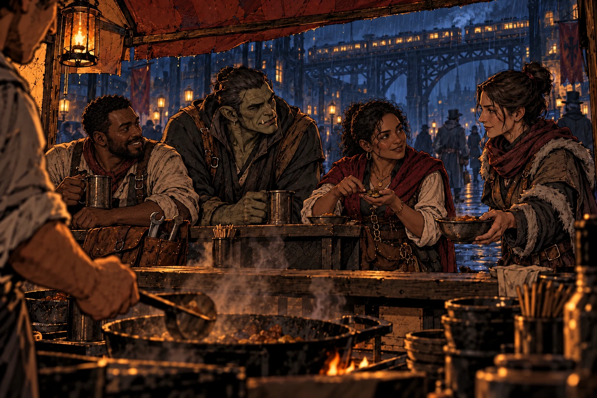
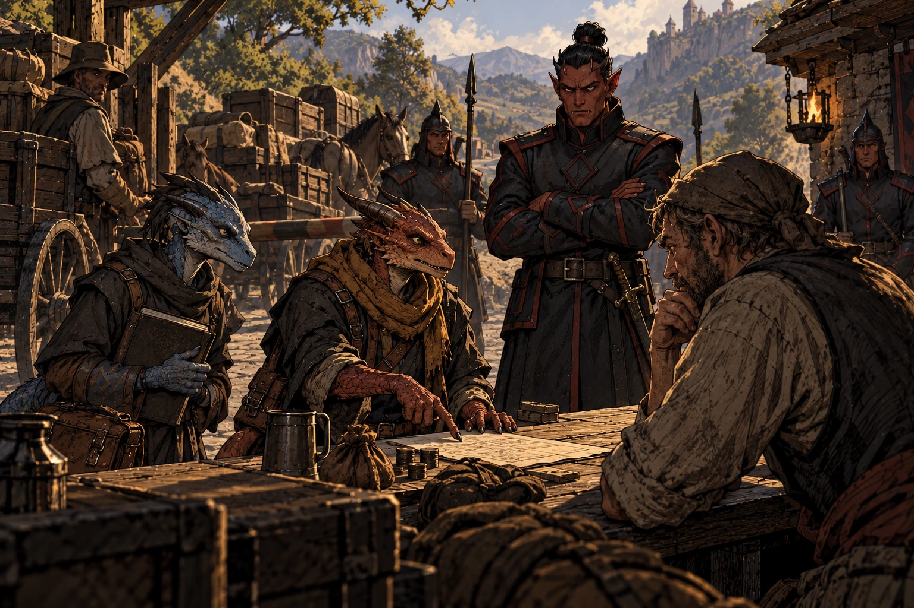
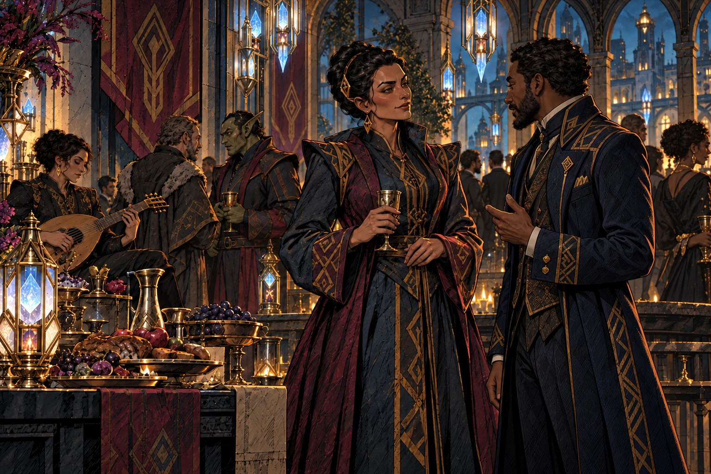
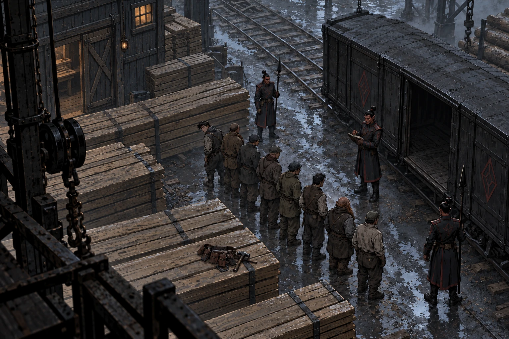
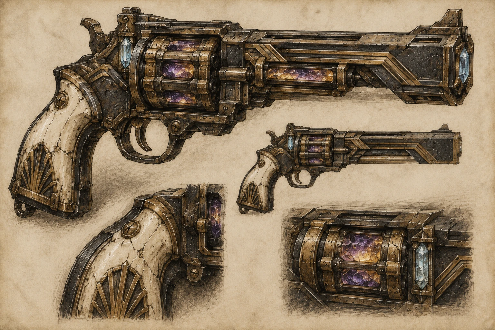
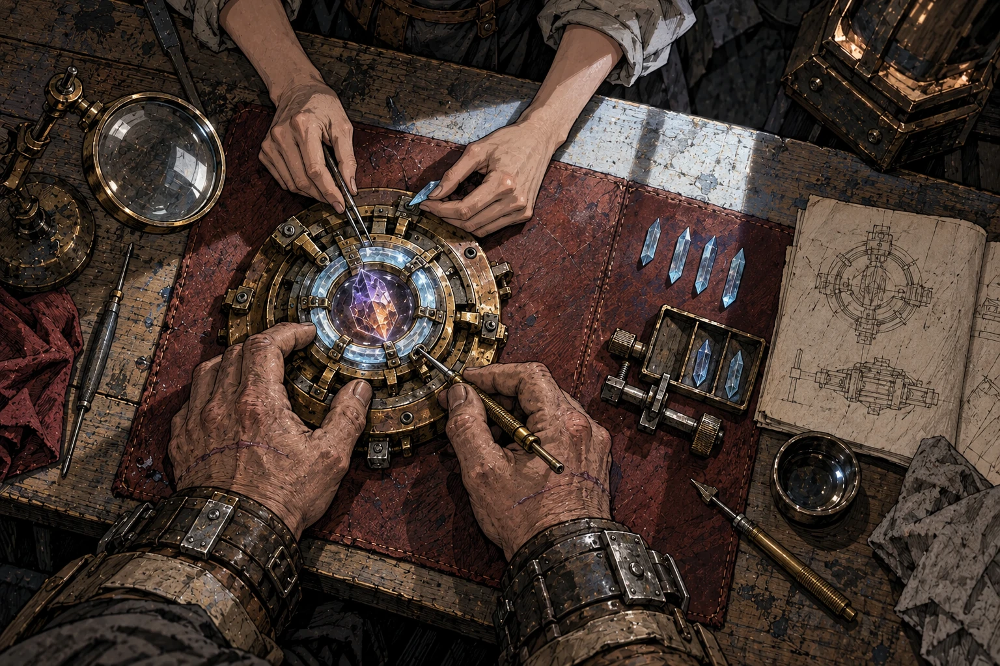

I. People
Humans of many cultures still live across the west, alongside the surviving peoples of the Firstborn: dwarves scattered from their mountain homes, halflings trying to fill the emptiness left by the Quiet, and orcs free to choose their own lives, though still divided over the terrible price of that freedom. In cities like Kin-Aska, Chardonian influence mingles with the languages and customs of the old northern kingdoms, and others who try to eke out a living as best they can.

Kobolds have thrived in the empty spaces on the map. Some make a living as intermediaries between hobgoblins and other peoples; some become thieves and raiders. Others gather in quiet retreats, trying to keep the chaos of the world away from their doors, as best they can.
And there are stranger stories, of the plane-touched, people whose very natures were changed by the Godfall.

II. Places
Beneath Mount Nera, the pale towers of Chardon rise above crowded refugee districts and glittering plazas alike. Here the oligarchs of the Chardonian Council preside over the Chardonian Confederacy, through bargains and arrangements largely hidden from public view. Citizens enjoy freedom, power, and protection, while those without citizenship have little of any of them. But even citizens cannot count on safety forever: an unpaid debt can be enough to strip them of their rights, and the poor live on the edge even when formally protected by citizenship.
Upriver, Karszeg, the hobgoblin kingdom of the Shattered Ice clan, controls the chaos-glass mines of the western Sentinel slopes, and the productive valleys of the upper Chasa. Chardon's chalyte wealth has bought it better terms, but its factories still need the fuel that comes down from the mountains. Other hobgoblin kingdoms lie across the north, some ruled by brutal dictators, others closely entangled with Chardon's wealthy elites.
In Kin-Aska, Karszeg's human viceroy Tazira presides over a lavish court of entertainments, ambition, and ruthless bargaining. Around her, rail yards, timber works, and ore mills draw people hoping to make their fortunes. The city she has build is a free-wheeling frontier town, but cannot escape its vassal status.

The press gangs of Karszeg take people for the timber yards, logging operations, and mines with impunity.

South of the Chasa, Chardonian governors rule the farms and cattle estates of the Yeraad and the chalyte colonies in the Chataans, extracting the wealth of these hinterlands for the city's commerce. These colonies are scattered possessions, connected where Chardon can defend a road, river, or railway. Beyond them, much of the country remains outside its control.
In the Elderwood, the elven mists are gone, and stands of dead trees tower over chaparral scrub and yellow summer grass. Deno'qai communities still live here, alongside refugee camps and outlaw hideouts. Some survive by sharing food and shelter, helping one another beyond the reach of settled authority, though never safely beyond the reach of hobgoblin raids.
III. Magic
Divine magic is gone, but arcane magic remains powerful. Chaos glass, crystallized in the wounds left by the Godfall, fires guns, drives trains, heats furnaces, and powers the engines that carry ships through the sky. It is the heart of the industrial might of the world, but it is dangerous. In large quantities, it frequently explodes.

Poisonous and explosive, chaos glass brings progress at the constant risk of catastrophe.
Chalyte, rare and expensive, can make that power safer, holding an enchantment or forcing the violence of chaos glass into something precise and repeatable. Refined chalyte is controlled by governments and the wealthy; raw or damaged crystals bring dangers of their own. Those who can afford it travel in skyships and work with carefully regulated machines. But most people still walk, ride, or take passage on ordinary ships, and risk their lives and health for the power of chaos glass.
